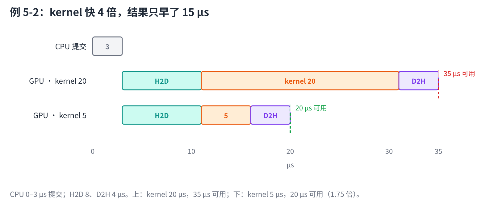
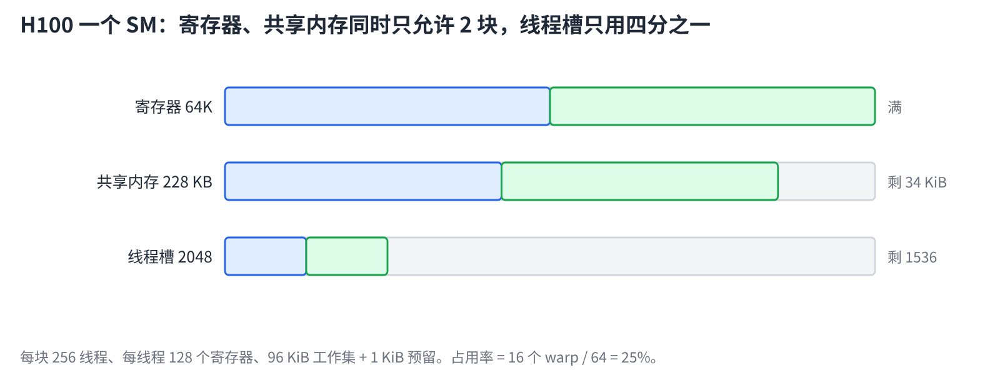
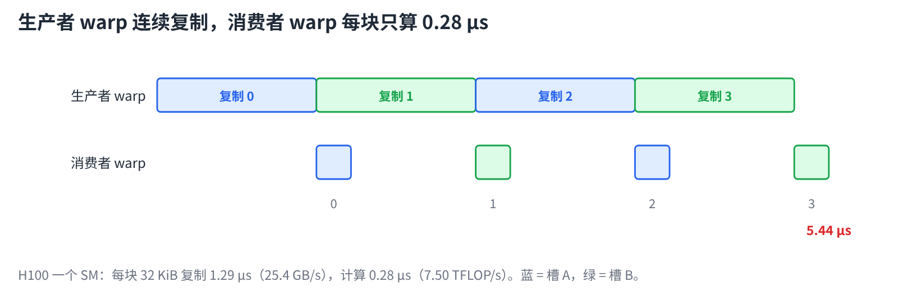
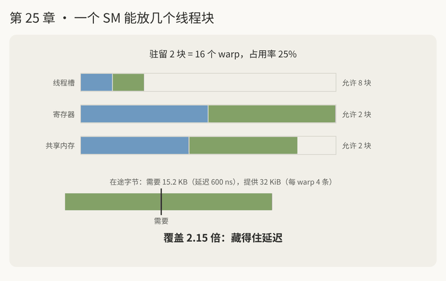

第 25 章 · 提交、搬移与同步：从调用返回到结果可用
本地运行
git clone https://github.com/wikieden/ai-infra-from-constraints
cd ai-infra-from-constraints/code/notebooks
pip install jupyterlab torch numpy
jupyter lab ch25_submit_sync.ipynb也可以下载后直接用 VS Code 打开 .ipynb 运行。需要 GPU 的章节在 Colab 里选「代码执行程序 → 更改运行时类型 → GPU」。
本章回答：PyTorch 里一行矩阵乘返回了，GPU 算完了没有？一次调用的时间里，哪些是提交、哪些是复制、哪些才是 kernel？一个 kernel 在 SM 上能同时放几个线程块，靠什么藏住显存延迟？
讲解日期：2026-11-24 · 上一章：第 24 章 根据架构选择加速器 · 下一章：第 26 章 单个算子：分块、布局与切分
对应原文：materials/ai-infra-book/manuscripts/05-算子与运行时.md章首 L1–L19、§5.1 L21–L175（例 5-1、5-2，图 5-1 到 5-5）
本章缩写：D2D / D2H / H2D = Device to Device / Device to Host / Host to Device（设备到设备 / 设备到主机 / 主机到设备）· MMA = Matrix Multiply-Accumulate（矩阵 / 乘 / 累加）· SM = Streaming Multiprocessor（流式 / 多处理器）· warp = 一起发射指令的 32 个线程。全部缩写见 缩写与术语表
第 4 部分讲的是硬件有什么；第 5 部分讲程序怎么用。全部分用同一个算例：Qwen3-8B 的 FFN，隐藏宽度 \(H = 4096\)，中间宽度 \(F = 12288\)，一次处理 \(M = 1024\) 个 token，算一支投影 \(C = XW\)（BF16，FP32 累加）：
| 对象 | 形状 | 大小 |
|---|---|---|
| 输入 X | \([1024, 4096]\) | 8 MiB |
| 权重 W | \([4096, 12288]\) | 96 MiB |
| 输出 C | \([1024, 12288]\) | 24 MiB |
本章先看主机和加速器怎么分工，再看一个 kernel 在一个 SM 上怎么跑。
讲解
第一步：一次调用的三层：算子、kernel、launch（2026-11-24）
类比：餐厅点单。 服务员（CPU）记下菜名、写好单子、递进厨房（launch），转身就去招呼下一桌；厨房（GPU）照单炒菜。一道菜（算子）可以由几个厨师分几步做（多个 kernel），几道凉菜也可以一个厨师一起拌（一个 kernel 做几个算子）。
原文 L27–L35：
- 算子描述数学工作（矩阵乘、激活）；kernel 是加速器上真正执行的程序；launch 是 CPU 发起一次 kernel 执行的动作。
- CPU 那一侧：框架读形状和类型、选实现、准备参数，经运行时和驱动提交。
- kernel 启动一个 grid，grid 由线程块组成；矩阵乘通常一个线程块负责一个输出 tile。线程块被安排到有空余资源的 SM 上，早完成的让位，grid 可以分批跑完。
- launch 是异步的：调用返回时只是提交完了。CPU 只有在要用结果、或要覆盖 GPU 还在读的数据时才需要等。
所以有两个方向可以加速：减少 GPU 等 CPU 的时间（第 29 章），缩短 kernel 本身（第 26–28 章）。
补基础：线程、线程块、grid 见《CUDA 从线程到 Tensor Core》第 1、4 章；PyTorch 一个算子从 Python 走到 kernel 的路径见《PyTorch 从里到外》第 1 章。
一句话：算子是数学，kernel 是程序，launch 是提交；提交返回不等于算完。
第二步：复制、stream 和 event：谁等谁（2026-11-24）
类比：两条传送带。 一条运原料（复制流），一条加工（计算流）。加工带要等"原料到了"的牌子亮才动；原料带要等"上一批原料用完了"的牌子亮，才能往同一个筐里倒新料。
三种复制（原文 L39–L45）：H2D（输入进显存）、D2H（结果回主机）、D2D（显存内部，如固定输入缓冲）。权重只传一次、留在显存；层间激活、KV 都不回主机；GPU 上采样的话，CPU 只收几个 token ID。
例 5-1（原文 L59–L65）：RTX PRO 6000 经 PCIe Gen5 x16，每方向 64 GB/s，传 64 MiB 输入约 1.05 ms；分两份各约 0.52 ms，总量不变，但前半批可以先开算。
锁页内存（原文 L67）：普通内存的页由操作系统管，运行时会先复制到内部锁页缓冲再搬——多一次主机复制。直接在可复用的锁页缓冲里准备输入，就省掉这次中转。
stream 与 event（原文 L71–L90）：
- 同一个 stream 里的任务按顺序执行：H2D 和用这份输入的 kernel 放一起，计算自然排在复制后面。
- 不同 stream 之间用 event：复制流记录"已传完"，计算流等它；计算流记录"已用完"，复制流等它再覆盖。等待发生在加速器的任务序列里，CPU 不停。
- 四块缓冲各有自己的"最后使用者"（主机源缓冲、GPU 输入缓冲、D2H 两端），每块都要在最后一次读写后记事件。
程序停住不动（原文 L92–L94）：每个等待都指向一个具体事件。事件永远不被记录 → 永远等（不是变慢）。常见原因：漏记"已用完"事件、两条流互相等、多卡集合通信有一张卡少发一次。排查先看被等的一侧是否还在出结果：还在出就是慢，完全不动才是死等；给等待设超时并打印各流未完成的任务。
场景代码：PyTorch 里用两个 stream 和 event 让下一批 H2D 和当前批计算重叠（真实 API）：
import torch
copy_s, comp_s = torch.cuda.Stream(), torch.cuda.Stream()
host = [torch.randn(1024, 4096, pin_memory=True) for _ in range(2)] # 锁页、可复用
dev = [torch.empty(1024, 4096, device="cuda") for _ in range(2)] # 两个设备槽
copied = [torch.cuda.Event() for _ in range(2)]
used = [torch.cuda.Event() for _ in range(2)]
for step in range(8):
k = step % 2
with torch.cuda.stream(copy_s):
copy_s.wait_event(used[k]) # 槽 k 上一批用完了才能覆盖
dev[k].copy_(host[k], non_blocking=True)
copied[k].record(copy_s) # "已传完"
with torch.cuda.stream(comp_s):
comp_s.wait_event(copied[k]) # 等输入到齐
y = dev[k] @ dev[k].T
used[k].record(comp_s) # "已用完"
一句话：同一 stream 内按序，跨 stream 靠 event；每块缓冲在最后一次使用后记事件，漏记就会死等。
第三步：三种计时：提交、加速器、结果可用（2026-11-24）
类比：寄快递。 你在柜台填单只花 3 分钟（提交），快递车在路上跑 20 分钟（kernel），但收件人拿到包裹还要加上装车和派送（复制）。
例 5-2（原文 L100–L106）：CPU 0–3 μs 提交，H2D 8 μs、kernel 20 μs、D2H 4 μs：
kernel 缩到 5 μs，结果在 20 μs 可用：kernel 快 4 倍，整体只快 1.75 倍，剩下 15 μs 是提交和复制。

图 25-1 · 同一条时间线上，三种计时测的是三段不同的东西。
在哪里掐表（原文 L108）：
| 计时方式 | 测到的是 |
|---|---|
| 异步调用前后读 CPU 时钟 | 提交用了多久（3 μs） |
| 先同步再停表 | 从发起到结果可用（35 μs） |
| CUDA event 夹在任务序列里 | 加速器执行这段任务的时间 |
| profiler | 三者画在同一条时间线上，能看清排队和等待 |
首次调用（原文 L110）：编译 100 ms + 每次执行 1 ms：调 1 次 101 ms，调 100 次平均 2 ms。调用越多，编译摊得越薄，每次的 1 ms 不变（第 29 章用同一方法算分桶和特化）。
场景代码：同一段代码，三种掐表方式得到三个数（真实 API）：
import time, torch
a = torch.randn(4096, 4096, device="cuda", dtype=torch.bfloat16)
t0 = time.perf_counter(); c = a @ a; t1 = time.perf_counter() # 只测到提交
torch.cuda.synchronize(); t2 = time.perf_counter() # 加上等待 = 结果可用
s, e = torch.cuda.Event(enable_timing=True), torch.cuda.Event(enable_timing=True)
s.record(); c = a @ a; e.record(); e.synchronize()
print(f"提交 {1e6*(t1-t0):.0f} μs，可用 {1e6*(t2-t0):.0f} μs，GPU {1e3*s.elapsed_time(e):.0f} μs")
一句话：kernel 时间只是结果可用时间的一段；掐表的位置决定你测到的是哪一段。
第四步：一个 kernel 在一个 SM 上：驻留、在途字节、分工（2026-11-24）
类比：一间教室。 座位（线程槽）、课桌抽屉（寄存器）、公共书架（共享内存）都有限；能同时上课的班级数，由最先用完的那样东西决定。班级越多，一个班等材料时，别的班还能讲课。
原文 L114 的设定：H100 一个 SM，2048 个线程槽、32 个线程块上限、64K 个寄存器、共享内存 228 KB（233,472 B）。kernel：一个线程块 256 线程、每线程 128 个寄存器，负责一个 128×128 输出块，K 步长 64，工作集 96 KiB（A、W 块各 16 KiB + FP32 累加器 64 KiB），每块另留 1 KiB。
驻留（原文 L118–L127）：每类资源能容纳的块数向下取整，取最小：
| 资源 | SM 总量 | 每块需求 | 可容纳 |
|---|---|---|---|
| 线程槽 | 2048 | 256 | 8 |
| 寄存器 | 64K | 32K | 2 |
| 共享内存 | 233,472 B | 97 KiB | 2 |
| 线程块上限 | 32 | 1 | 32 |
驻留 2 块 = 16 个 warp，占用率 \(16/64 = 25\%\)。寄存器和共享内存同时卡住；只把累加器挪进寄存器，共享内存松了，寄存器还是只允许 2 块。

图 25-2 · 改哪项资源才有用，看哪项最紧。
延迟隐藏（原文 L135–L142）：维持带宽需要的在途字节 = 带宽 × 延迟（第 21 章的 Little 定律）：
一条加载 32 线程 × 16 B = 512 B，每 warp 最多挂 4 条：覆盖 2.15 倍，25% 的占用率够用。翻转条件（原文 L170）：延迟 1000 ns、每 warp 只挂 2 条时，需要 25.4 KB、只有 16 KiB，覆盖 0.65，要 25 个 warp（4 个线程块）才够，而资源只给 2 块。这就是第 26 章"大块少读却变慢"的定量原因。
矩阵指令（原文 L144–L146）：一条 MMA 形状 16×8×16，4096 FLOPs；128×128×64 的块要 \(8 \times 16 \times 4 = 512\) 条，8 个 warp 平分。Hopper 的 warpgroup 级指令（4 个 warp 一起发）可以直接从共享内存取操作数、异步执行。
栅栏与 warp 分工（原文 L148–L158）：每个缓冲槽配一对栅栏："满"（异步复制完成触发，计算等它）、"空"（计算用完触发，下一次复制等它）。一个 warp 只发复制（生产者），其余只算（消费者）：warp specialization。按 H100 平分到每 SM：25.4 GB/s、7.50 TFLOP/s，一块 32 KiB 复制 1.29 μs、计算 0.28 μs，复制慢 4.6 倍（每字节只做 64 次运算，而峰值比是 295）。

图 25-3 · 两个槽交替；复制首尾相接，计算大部分时间在等。第 27 章用同样的 1.29 / 0.28 μs 算流水总时间。
异步批量复制按描述符整块搬，不能在行间补字，于是用 swizzle（按规则置换块内地址）分散 bank（第 26 章）。昇腾上对应：AIC / AIV 是独立的核而不是 warp，L0 / L1 / UB 容量决定一次放多大的块，MTE / NDDMA 搬移、BufferID 组织交接。
补基础：占用率见《CUDA 从线程到 Tensor Core》第 8 章，warp specialization 见第 18 章。
一句话：驻留块数由最紧的资源决定；驻留的 warp 提供在途字节，不够带宽 × 延迟时，接口再宽也用不满。
动画演示：一个 SM 能放几个线程块

可交互版：animations/25-submit-sync.html（滑块：每线程寄存器、每块共享内存、显存延迟、每 warp 挂起的加载数）。
怎么看：
- 三根横条是 H100 一个 SM 的线程槽、寄存器、共享内存，彩色段是每个驻留线程块的占用（第四步）；
- 右上显示每类资源允许几块、取最小后的驻留块数和占用率；
- 下面一根条比较"需要的在途字节"和"驻留 warp 能提供的"，不够时变红；
- 播放时：128 寄存器 / 96 KiB（2 块）→ 累加器挪进寄存器（共享内存降到 32 KiB，寄存器仍 128，还是 2 块）→ 64 寄存器 / 32 KiB（4 块）→ 回到 2 块、延迟 1000 ns 且每 warp 只挂 2 条（覆盖 0.65，在途字节不够）。
练习与作答记录
题 1（第三步）：CPU 提交 4 μs，H2D 12 μs，kernel 30 μs，D2H 6 μs，全部串行依赖。结果何时可用？kernel 优化到 10 μs 后整体快几倍？再把 H2D 换成"输入早已在显存"呢？
作答记录：（待作答）
题 2（第四步）：H100 一个 SM，线程块 128 线程、每线程 96 个寄存器、每块共享内存 48 KiB（另留 1 KiB）。四类资源各允许几块？占用率多少？
作答记录：（待作答）
题 3（第四步）：显存带宽 3.35 TB/s、132 个 SM、延迟 800 ns，每条加载 512 B、每 warp 挂 3 条。每个 SM 需要多少在途字节？至少要几个 warp？
作答记录：（待作答）
原书练习 5-1（L172：输出块缩为 64×64 时的占用率）。想多练可以做。
口诀
服务员递单就转身，炒没炒好要另问；
原料带等"到了"，加工带等"用完"，漏一块牌子就死等；
填单三分钟，到手三十五；
教室座位、抽屉、书架，最先用完的定班级数；
班级够多，等材料时才有人在讲课。
本章复习卡片
I97（算子、kernel、launch 与异步提交）、I98（stream、event 与缓冲的最后使用者）、I99（例 5-2 三种计时：35 → 20 μs）、I100（驻留块数、占用率与在途字节）。练习做完后，按答错、卡住的地方再补。
附录 · 延伸阅读
留给以后深入学习用，不影响本章主线。★ 是建议先读的。
推荐阅读
| 读什么 | 读哪里 | 读它为了什么 |
|---|---|---|
| ★ AII 第 5 章 | 章首、§5.1 L1–L175 | 本章原文，例 5-1、5-2 |
| CUDA Programming Guide | Asynchronous Concurrent Execution；Streams、Events | stream / event 语义（原文 [^execution]） |
| 《CUDA 从线程到 Tensor Core》第 8、16、18、26 章 | occupancy、异步拷贝、warp specialization、stream 与 graph | 本章每一步在 CUDA 一侧的写法 |
| 《PyTorch 从里到外》第 5、24、25 章 | CUDA 语义、profiler、输入与同步 | 框架里的异步与计时 |
| FlashAttention-3 论文 | §3 | warpgroup 异步 MMA 与生产者 / 消费者（原文 [^fa]） |
数学原理
- 串行依赖相加：结果可用时刻 = 提交 + 各段加速器工作之和。
- 摊销：\((P + nT)/n \to T\)。
- 最小值定瓶颈：驻留块数 \(= \min_r \lfloor \text{总量}_r / \text{需求}_r \rfloor\)。
- Little 定律：在途字节 = 带宽 × 延迟。
公式清单
| 公式 | 意思 |
|---|---|
| \(T_{\mathrm{ready}} = T_{\mathrm{submit}} + T_{\mathrm{H2D}} + T_{\mathrm{kernel}} + T_{\mathrm{D2H}}\) | 例 5-2 的时间线 |
| 驻留块数 \(= \min(\lfloor 2048/t \rfloor, \lfloor 65536/(t \cdot r) \rfloor, \lfloor S/(s + 1\text{ KiB}) \rfloor, 32)\) | H100 一个 SM |
| 占用率 = 驻留 warp / 64 | |
| \(B_{\mathrm{need}} = R \cdot L / n_{\mathrm{SM}}\)，\(B_{\mathrm{have}} = w \cdot q \cdot 512\) | 在途字节的需求与供给 |
| MMA 条数 \(= (m/16)(n/8)(k/16)\) | 16×8×16 指令 |
代码对照：把本章的数字用代码算一遍
纯 Python，不需要 GPU。代码在仓库本地
ai-infra/solutions/chapter-code/ch25_submit_sync.py，配套测试tests/test_ch25.py：
bash cd ai-infra/solutions/chapter-code uv run python ch25_submit_sync.py # 一步一步打印 uv run pytest tests/test_ch25.py
讲义 ↔ 代码：
| 讲义 | 公式 | 写法 | 跑出来 |
|---|---|---|---|
| 第二步 例 5-1 | 字节 ÷ 带宽 | transfer_ms(64 * MiB, 64e9) |
1.05 / 0.52 ms |
| 第三步 例 5-2 | 依赖相加 | ready_time(3, 8, 20, 4) |
35 → 20 μs |
| 第三步 编译 | 摊销 | amortized_ms(100, 1, 100) |
101 / 2 ms |
| 第四步 驻留 | 取最小 | resident_blocks(256, 128, 96 * 1024) |
8 / 2 / 2 / 32 → 25% |
| 第四步 在途 | \(RL/n\) | inflight_bytes、inflight_have |
15.2 KB vs 32 KiB；0.65、25 个 warp |
| 第四步 分工 | mma_count(128, 128, 64) |
512 条；1.29 / 0.28 μs |
关键几行：
def resident_blocks(threads, regs_per_thread, smem_bytes, ...):
return {
"threads": sm_threads // threads,
"regs": sm_regs // (threads * regs_per_thread),
"smem": sm_smem // (smem_bytes + reserve), # 每块另留 1 KiB
"blocks": sm_blocks,
}
代码里才看得到的 3 件事：
- 228 KB 是 CUDA 文档的写法，实际是 233,472 B（228 × 1024）；每块 97 KiB = 99,328 B，两块后剩 34 KiB。
- 在途字节的"需要"用 \(10^3\) 制（15.2 KB），"提供"是 \(2^{10}\) 制（32 KiB）；比值 2.15 是统一成字节后算的。
- 每 SM 的带宽和峰值是整卡平分到 132 个 SM 的份额，假设这个线程块独占它所在的 SM。
自己改一改（不影响练习答案）：
- 把
resident_blocks的默认值换成 RTX PRO 6000（每 SM 1536 线程、64K 寄存器、100 KB 共享内存、24 块上限），同一个 kernel 驻留几块？ - 给
inflight_have加一个"异步批量复制"版本：一个线程一次请求整块 16 KiB，需要几个在途块？ - 改
ready_time，把 H2D 和上一批的 kernel 重叠起来，连续 10 批要多久？